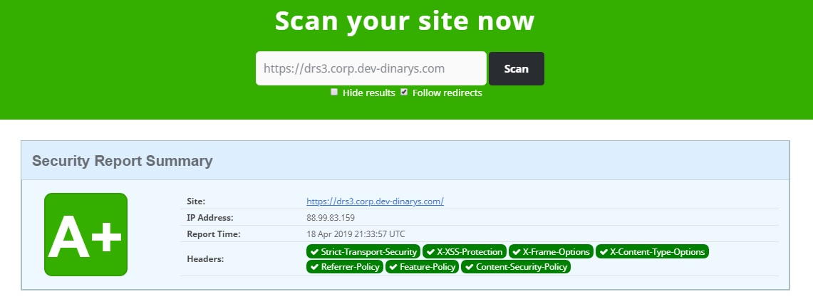
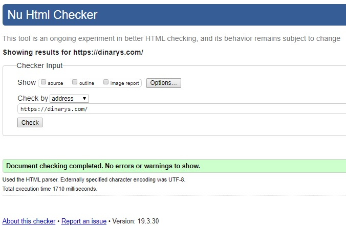
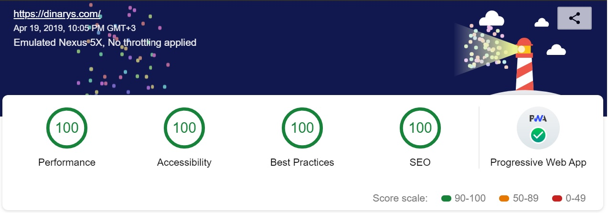
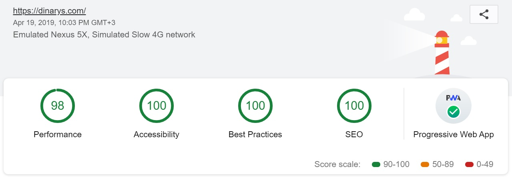
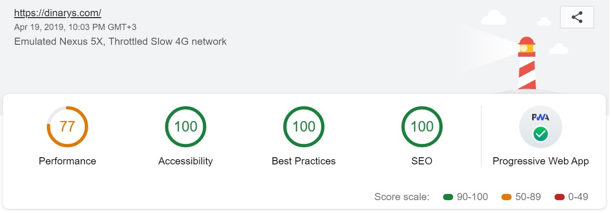

Shower Presentation Engine
Yours Truly, Famous Inc.
Dinarys Project Overview
Brought to you by
Victor Tkachenko
© John Carey
Quality attributes
Security
Valid markup
Performance
Usability
Installable
Offline usage
Security

Valid markup (good SEO as side effect)

Performance,
no throttling

Performance, simulated 3g, 4x CPU slowdown

Performance, applied 3g, 4x CPU slowdown

About metrics
Will be better after:
new server
debug few scripts
discusssing unnecessary analytics (
?
)
Usability
Setting locale by default using user preferences (
In Progress
)
Image resizing for different resolutions
Serving next-gen image formats
Mobile-friendly by default
Support the latest standards
Application can works offline
Features to implement (
?
)
Styling 404 pages etc
Unique feature like unpredictable animation
Our projects should satisfy our requirements (about Quality Attributes)
maps for contacts (?)
Questions?